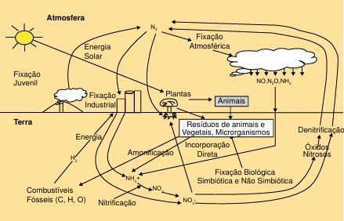
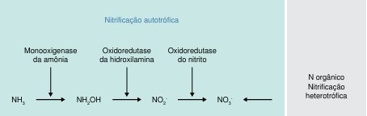

Transformando Nitrogênio em Fertilidade!Nitrificação por microrganismos do Domínio Bacteria
Entenda o ciclo que alimenta plantas e solos
Unifesp baixada santista .2026
Instituto do mar - Bictmar noturno - BMA
A nitrificação é um processo biológico essencial realizado por bactérias específicas como as Nitrosomonas e Nitrobacter que transformam a amônia (NH₃), tóxica para plantas, em nitrito (NO₂⁻) e nitrato (NO₃⁻), de formas que as plantas podem absorver facilmente.
é um processo de oxidação do amônio (amônia, em termos de substrato) para nitrito e, subsequentemente, para nitrato (NO3-) realizado por microrganismos quimioautotróficos, que obtêm o C do CO2 e a energia da oxidação química para a síntese de seus constituintes celulares
Ocorrre principalmente em solos aeróbios e águas ricas em oxigênio

Bactéria: Nitrosomonas
Amônia é oxidada para nitrito (intermediário tóxico).

Bactéria: Nitrobacter
Nitrito é convertido em nitrato (forma ideal para plantas).
| Bactéria | Função | Condições Ideais |
|---|---|---|
| Nitrosomonas | NH₃ → NO₂⁻ | pH 7-8, O₂ alto |
| Nitrobacter | NO₂⁻ → NO₃⁻ | pH 7-8, O₂ moderado |
| Problema | Causa | Solução |
|---|---|---|
| Baixa atividade | Solo ácido | Calagem (aumentar pH) |
| Inibição | Falta de O₂ | Aeração do solo |
| Perda de N | Excesso de água | Drenagem adequada |
Weverson silva - 177.371
Ingrid Alves Deodato – 164.858
Letícia Vitória Silva – 184.982
Amanda da Silva Caires – 162.797
Ana beatriz silva - 189.047
Izabel santana - 156.275